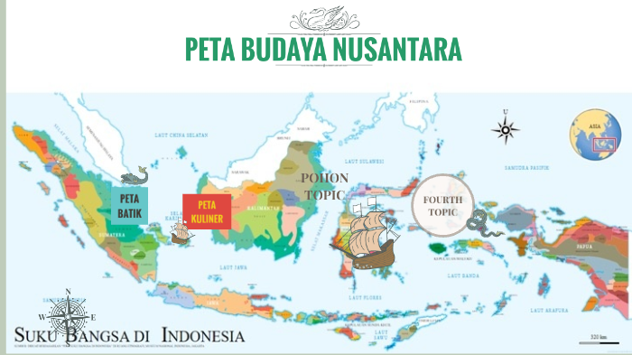

Nusantara adalah istilah yang merujuk pada gugusan kepulauan yang membentang dari Sabang hingga Merauke. Kata “Nusantara” berasal dari bahasa Sanskerta, yaitu nusa (pulau) dan antara (di antara). Istilah ini sejak lama digunakan untuk menggambarkan wilayah kepulauan yang luas, kaya, dan memiliki keragaman budaya, etnis, serta bahasa. Kini, Nusantara menjadi simbol persatuan bangsa Indonesia yang hidup dalam keberagaman.

Peta Budaya Nusantara
Indonesia dikenal sebagai negara kepulauan terbesar di dunia dengan lebih dari 17.000 pulau yang tersebar di antara dua benua dan dua samudera. Letak geografis ini menjadikan Nusantara sebagai wilayah yang sangat strategis untuk jalur perdagangan internasional sejak berabad-abad lalu.
Keunikan geografis Nusantara meliputi:
Selain kaya secara geografis, Nusantara juga dikenal dengan keberagaman budayanya. Terdapat ratusan suku bangsa yang mendiami wilayah ini, masing-masing dengan adat istiadat, bahasa daerah, dan tradisi yang khas. Dari Sabang hingga Merauke, kekayaan budaya Nusantara tercermin dalam seni tari, musik tradisional, pakaian adat, rumah adat, serta upacara adat yang diwariskan turun-temurun. Perbedaan tersebut tidak menjadi penghalang, melainkan kekuatan yang membentuk identitas bangsa. Nilai toleransi, kebersamaan, dan gotong royong menjadi fondasi yang menyatukan masyarakat Nusantara dalam kehidupan berbangsa dan bernegara.
Nusantara bukan sekadar istilah geografis, tetapi juga mencerminkan jati diri bangsa Indonesia. Semangat persatuan dalam keberagaman tercermin dalam semboyan Bhinneka Tunggal Ika, yang berarti berbeda-beda tetapi tetap satu. Nilai ini mengajarkan pentingnya saling menghargai perbedaan demi terciptanya keharmonisan. Di tengah tantangan globalisasi dan modernisasi, menjaga dan melestarikan nilai-nilai Nusantara menjadi hal yang sangat penting. Dengan memahami dan menghargai kekayaan alam serta budaya yang dimiliki, Nusantara akan terus menjadi sumber kekuatan, identitas, dan kebanggaan bagi seluruh rakyat Indonesia.
Nusantara : Bhinneka Tunggal Ika
Nusantara merupakan gambaran utuh wilayah kepulauan Indonesia yang kaya akan keberagaman alam, budaya, suku, bahasa, dan tradisi. Di tengah keragaman tersebut, bangsa Indonesia disatukan oleh semboyan Bhinneka Tunggal Ika, yang berarti berbeda-beda tetapi tetap satu.
Konsep Nusantara mencerminkan kondisi geografis Indonesia sebagai negara kepulauan. Setiap pulau memiliki ciri khas dan kebudayaannya sendiri. Namun, perbedaan ini tidak menjadikan bangsa Indonesia terpecah. Justru, keberagaman tersebut menjadi kekuatan yang membentuk identitas nasional.
Bhinneka Tunggal Ika berperan sebagai landasan persatuan bangsa Nusantara. Semboyan ini mengajarkan toleransi, saling menghormati, dan hidup berdampingan secara damai. Nilai ini sangat penting dalam menjaga keharmonisan masyarakat yang multikultural, baik dalam kehidupan sosial, budaya, maupun beragama.
Dalam kehidupan berbangsa dan bernegara, semangat Bhinneka Tunggal Ika mendorong masyarakat Nusantara untuk tetap bersatu meskipun memiliki latar belakang yang berbeda. Persatuan inilah yang menjadi fondasi kuat bagi pembangunan nasional dan ketahanan bangsa.
Dengan menjunjung tinggi nilai Bhinneka Tunggal Ika, Nusantara tidak hanya menjadi wilayah geografis, tetapi juga simbol persatuan dan kebanggaan bangsa Indonesia. Keberagaman bukanlah penghalang, melainkan anugerah yang harus dijaga dan dirawat bersama demi masa depan Indonesia yang damai dan sejahtera.

Pakaian adat Jawa Barat adalah kebaya Sunda untuk wanita dan baju pangsi atau beskap untuk pria. Busana ini biasanya dipadukan dengan kain batik dan ikat kepala khas Sunda.

Pakaian adat Kalimantan Timur adalah baju Ta’a untuk wanita dan sapei sapaq untuk pria. Ciri khasnya motif Dayak dan hiasan manik-manik. Biasanya dipakai pada upacara adat.

Pakaian adat Bali terdiri dari kebaya untuk wanita dan kain kamen serta udeng untuk pria. Busana ini dipakai saat upacara adat dan keagamaan sebagai simbol kesucian.

Tari Piring adalah tarian tradisional dari Minangkabau, Sumatra Barat, yang menggunakan piring sebagai properti utama. Penari mengayunkan piring di telapak tangan dengan cepat tanpa menjatuhkannya, melambangkan rasa syukur dan kegembiraan masyarakat Minang.

Tari Gandrung Sewu adalah tarian massal khas Banyuwangi yang ditampilkan oleh ribuan penari di tepi pantai Boom. Tarian ini menampilkan keindahan budaya Using dan menggambarkan kegembiraan serta rasa syukur masyarakat Banyuwangi, dengan gerakan yang kompak dan kostum berwarna cerah.

Tari Pendet adalah tari tradisional Bali yang awalnya digunakan dalam upacara di pura untuk menyambut dewa, lalu berkembang menjadi tari penyambutan tamu. Penarinya menebar bunga dari bokor sebagai simbol kesucian, dan gerakannya lembut serta anggun.

Rumah adat Sumatera Barat adalah Rumah Gadang, yaitu rumah panggung dengan atap bergonjong menyerupai tanduk kerbau. Rumah ini dihuni keluarga besar Minangkabau dan memiliki banyak ukiran bermotif alam sebagai lambang filosofi adat.

Rumah adat Riau adalah Rumah Selaso Jatuh Kembar, yaitu rumah panggung yang memiliki dua selasar lebih rendah dari ruangan utama. Bangunan ini tidak digunakan untuk tempat tinggal, tetapi untuk musyawarah, pertemuan adat, dan kegiatan masyarakat Melayu.

Rumah adat Bali yang berbentuk gerbang adalah Candi Bentar, yaitu gapura terbelah dua yang berdiri simetris sebagai pintu masuk ke pura atau bangunan suci. Struktur ini melambangkan keseimbangan antara dunia nyata dan dunia spiritual.

Dawet adalah minuman tradisional Indonesia yang berasal dari Jawa. Ciri khasnya cendol dari tepung beras, kuah santan, dan gula merah cair. Biasanya disajikan dengan es sehingga rasanya manis dan menyegarkan.

Kue putu ayu adalah kue tradisional Indonesia berbahan dasar tepung terigu dan kelapa parut. Ciri khasnya bentuk cetakan bunga dengan lapisan kelapa di bagian atas. Biasanya disajikan sebagai kudapan manis pada acara keluarga atau sajian sore hari.

Sate ayam adalah makanan khas Indonesia berupa potongan daging ayam yang ditusuk dan dipanggang. Ciri khasnya disajikan dengan bumbu kacang dan kecap manis. Biasanya dinikmati dengan lontong atau nasi pada berbagai acara dan makanan sehari-hari.